Спроектировал лаунчпад и бренд для запуска IPO
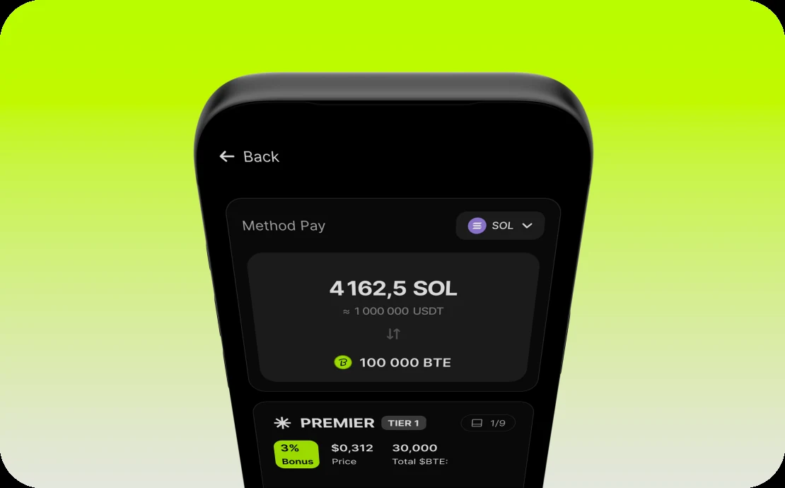
Суть проекта
Передо мной стояла задача соединить две стороны IPO. Фаундеры подают заявку, проходят проверку и привлекают деньги. Инвесторы выбирают проект, уровень участия и покупают аллокацию до листинга.
Вокруг размещения нужен целый финансовый продукт: кошелёк с депозитом и выводом, двухфакторная защита, VIP-программа для крупных клиентов и форма заявки для команд. Всё это я проектировал как одну систему, чтобы пользователь не чувствовал, что переходит между разными сервисами.
Инвестор должен поверить проекту за минуту
На первичных размещениях много сомнительных проектов, и инвестор это знает. Решение «доверяю или нет» он принимает за первую минуту на странице.
На большинстве похожих платформ всё, что для этого нужно, разбросано: команда, токеномика и аудит лежат в разных местах страницы. Уровни участия объяснены таблицей цифр, а любая ошибка при покупке отправляет начинать заново. В итоге человек уходит, так ничего и не купив.
Моя роль
Я отвечал за продукт целиком: от структуры модулей и пользовательских сценариев до визуального языка и передачи в разработку. Работал напрямую с фаундером и PM, согласовывал логику с backend, а frontend собрал из моих компонентов атомарную дизайн-систему для быстрого редактирования и создания новых экранов.
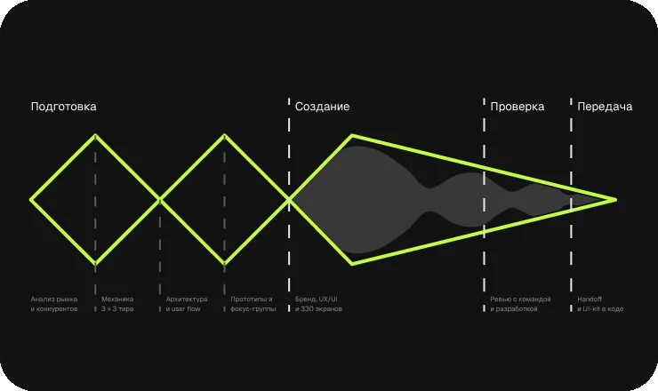
Цели вместо абстрактного «сделать удобно»
- 45% покупок завершаются, даже если на шаге оплаты не хватило средств
- 4%+ посетителей страницы проекта покупают аллокацию
- меньше 2 минут от открытия страницы до покупки
- 60% начатых заявок от фаундеров доходят до отправки
Исследование и поиск решения
Разобрал PinkSale, DxSale, Polkastarter и TrustPad, а у Binance и Bybit — паттерны кошелька и безопасности. Смотрел не только на интерфейс, но и на механику: уровни участия, график разблокировки, проверку проектов.
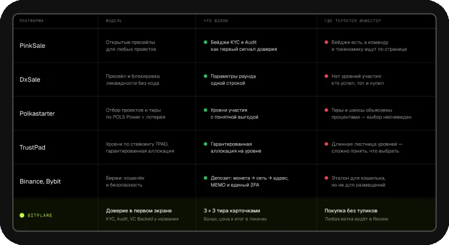
Важнее всего оказались три вопроса:
Сначала нужно было разобраться, как инвестор принимает решение. Я начал с того, на что человек смотрит, прежде чем вложить деньги в незнакомый проект.
- проверен ли проект?
- как увидеть предполагаемый профит?
- что будет, если что-то пойдёт не так?
Прототипирование и проверка
На основе исследования собрал гипотезы, а ключевые сценарии — покупку, депозит и заявку — собрал в прототипы и проверил на команде и в фокус-группах.
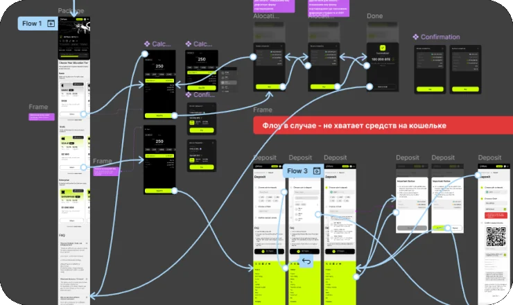
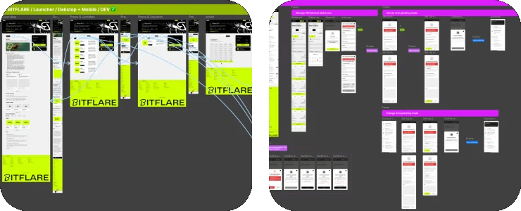
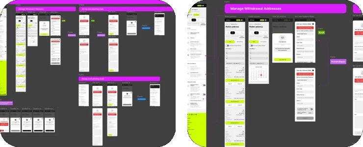
Одна точка подтверждения вместо десятка тупиков
Главное решение — свести покупку к одному экрану подтверждения. Пользователь может зайти без аккаунта, без денег на балансе или с неподтверждённой почтой. Любая из этих веток возвращает его туда же, а выбранный уровень и сумма сохраняются.
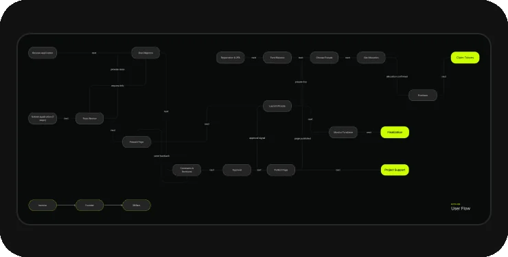
Вокруг этой точки я собрал модули продукта:
- Страница проекта как досье. Отметки о проверке личности, аудите и венчурных инвесторах стоят рядом с названием. Ключевые цифры раунда собраны в одну строку, а вкладки идут в одном порядке у всех проектов: страницу достаточно научиться читать один раз.
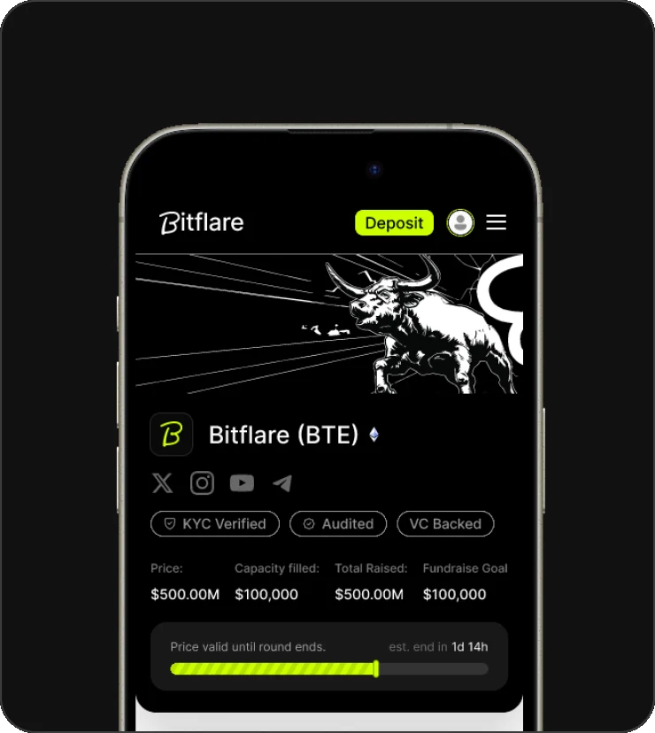
- Заявка для фаундеров. 7 шагов, по одному блоку вопросов на экран, и счётчик прогресса. Так нетехническая команда не тонет в длинной форме.
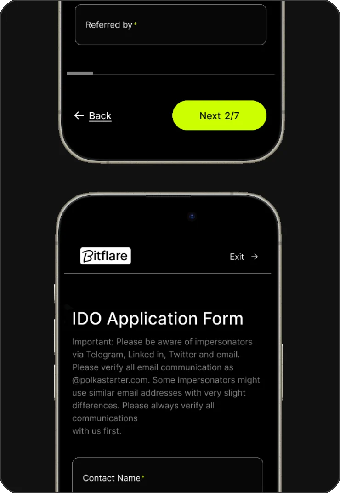
- Кошелёк без необратимых ошибок. Депозит и вывод идут по шагам: монета, сеть, детали. Для сетей с дополнительным кодом получателя есть отдельная форма и предупреждение. Статусы операций одинаковые везде, а номер транзакции ведёт прямо в блокчейн, без обращения в поддержку.
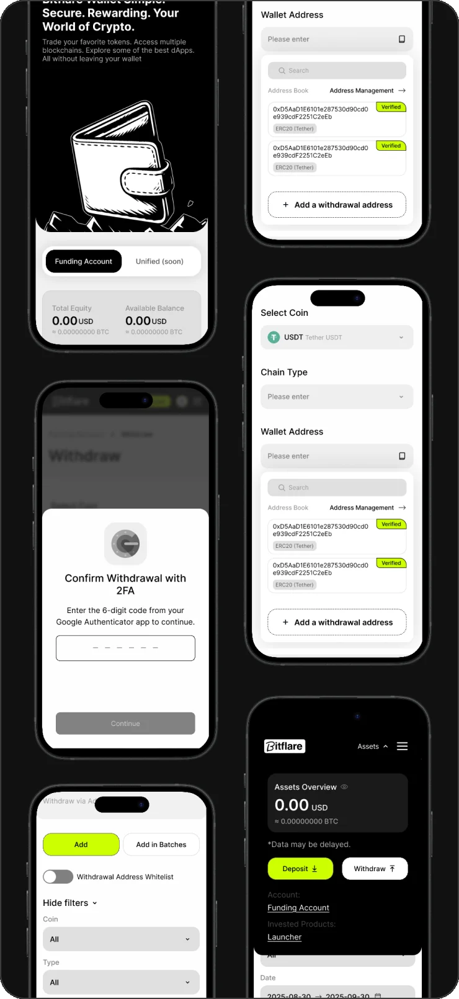
- Уровни участия — понятный выбор. Механика «3 уровня × 3 тира» разложена карточками. Уровень читается по цвету, в каждой карточке указаны бонус, цена и итог в токенах. Виджет покупки закреплён рядом.
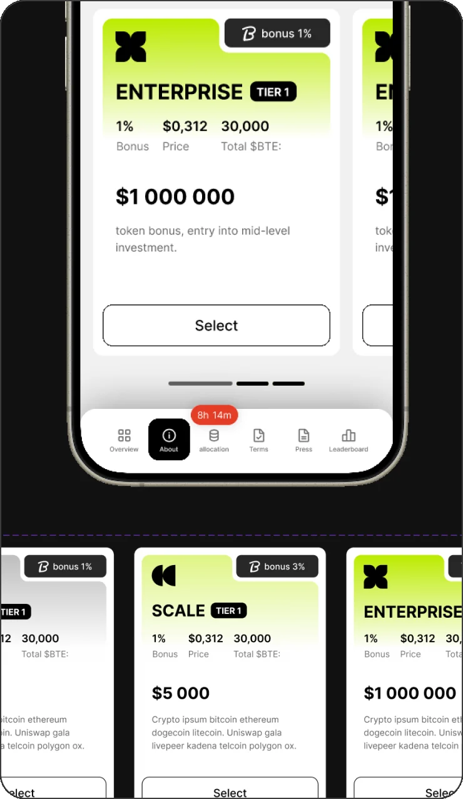
- Покупка без потери контекста. Если денег не хватает, продукт называет точную сумму «Not enough 200 USDT», ведёт на пополнение и возвращает обратно. Вход открывается поверх страницы, а не уводит с неё.
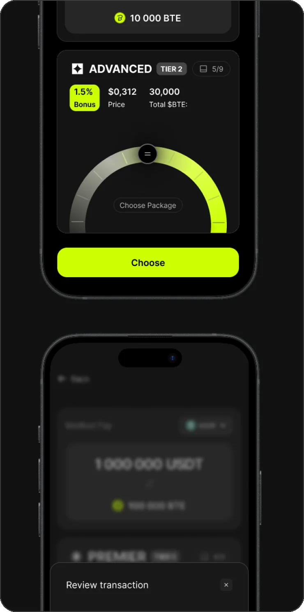
- Одно правило безопасности. Пользователь выбирает основной метод 2FA, и платформа запрашивает именно его при выводе, смене адресов и пароля.
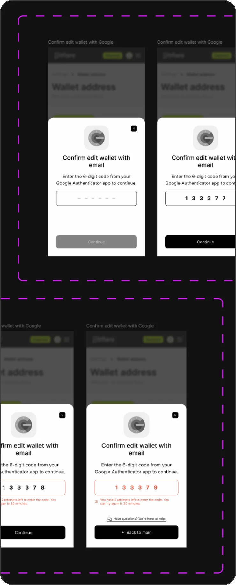
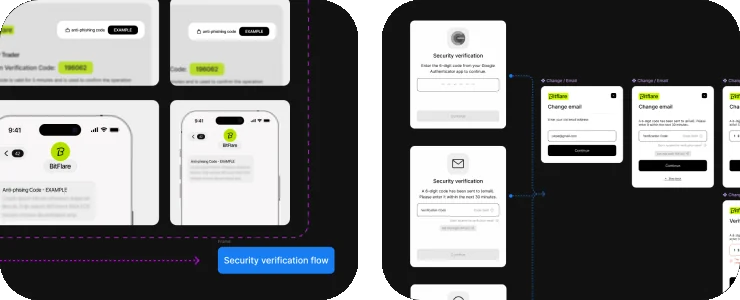
- VIP Club собран на тех же компонентах и сценариях, что и основная платформа. Меняется только визуальный стиль, пользователь остаётся в знакомой логике интерфейса, а по визуалу понимает, что он в другом статусе.
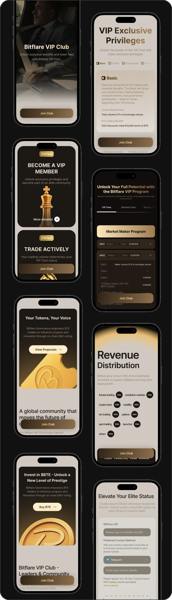
Результат
- Платформа спроектирована целиком: от бренда до 330 экранов на desktop и mobile
- Frontend собрал из моих компонентов атомарную дизайн-систему в коде: 312 состояний. Все ключевые сценарии описаны в 139 флоу, включая ошибки и пограничные случаи
- Цели по конверсии заложены в решения, фактические цифры появятся после замеров в продукте
Основные выводы
- Сложный финансовый продукт продаёт ясность. Инвестор не читает механику, он смотрит, можно ли доверять и сколько он получит.
- Ошибка не должна обрывать сделку: каждая ветка обязана вести обратно к покупке.
- Бренд в одинаковой нише — тоже продуктовое решение: он помогает запомнить платформу и вернуться.
Что сейчас я бы сделал иначе
Раньше подключил бы аналитику и заложил события для каждой цели ещё на этапе прототипов. Тогда метрики можно было бы показать уже по первой версии, а не только как целевые значения.